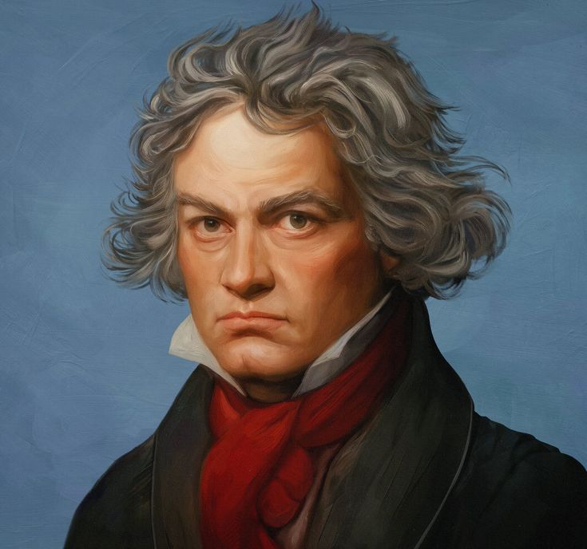
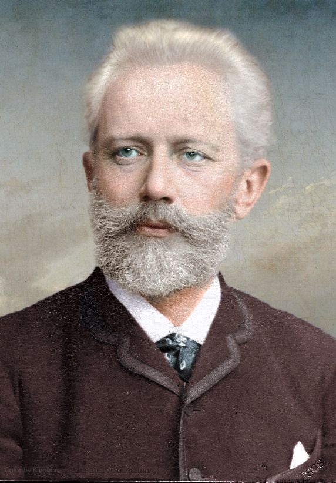
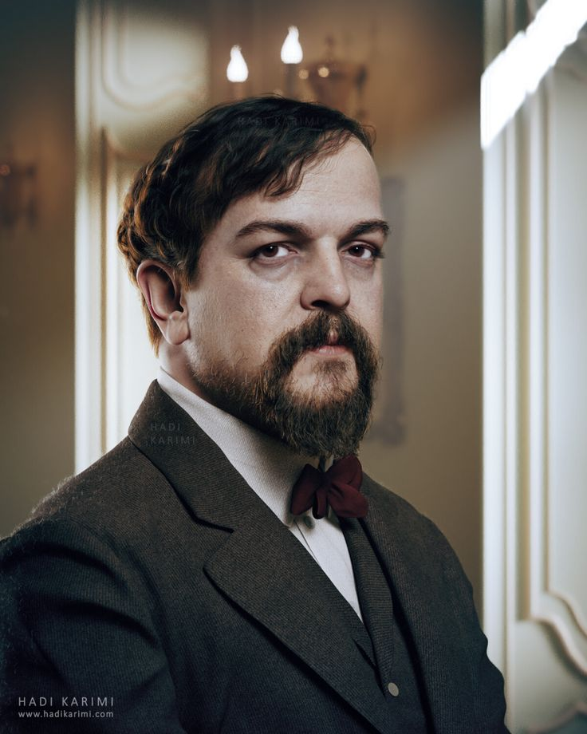
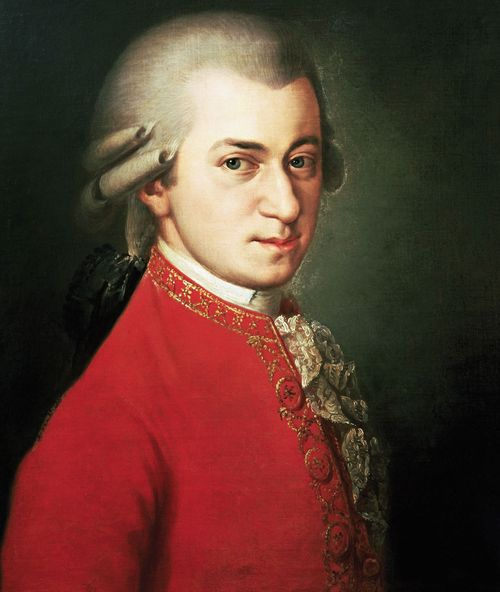

Für Elise
Ludwig van Beethoven
4:20 • Iconic • Piano Solo

Swan Lake
Pyotr Ilyich Tchaikovsky
3:45 • Ballet • Orchestral

Clair de Lune
Claude Debussy
4:07 • Impressionist • Peaceful

Eine kleine Nachtmusik
W.A. Mozart
5:48 • Lively • Classical EraNocturne Op.9 No.2
Frédéric Chopin
4:30 • Emotional • Solo PianoCanon in D
Johann Pachelbel
5:53 • Elegant • Timeless